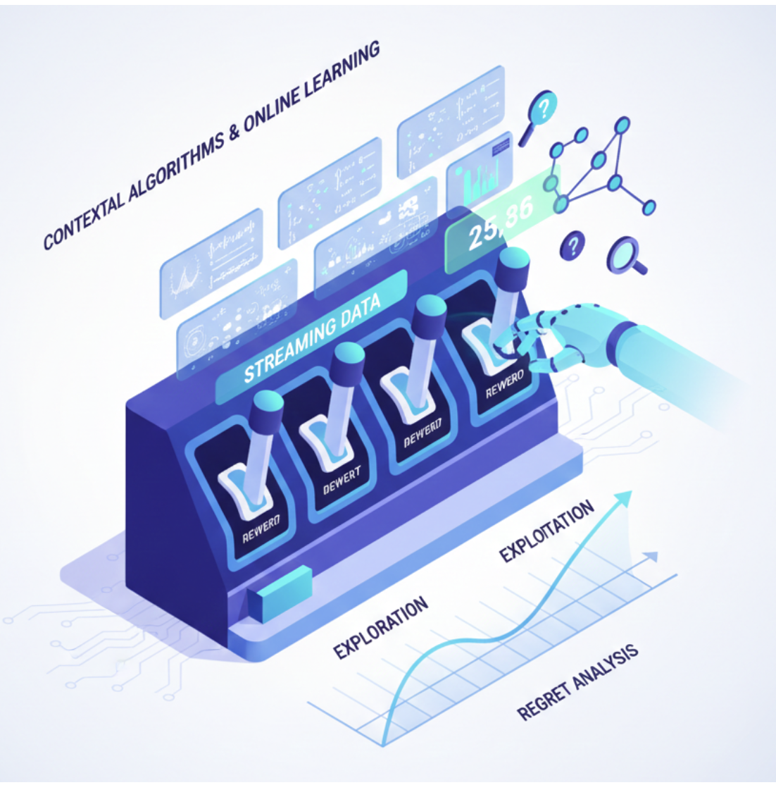

Research
My research sits at the intersection of control, optimization, and machine learning. I develop principled decision-making frameworks for Physical AI systems, aiming to bridge the gap between rigorous theoretical guarantees and high-performance adaptive intelligence. By addressing the fundamental trade-offs between efficiency, safety, and generalizability, my work seeks to empower autonomous systems—including robotics, autonomous vehicles, and large-scale mobility networks—to operate reliably in complex, uncertain, and dynamic environments.
Research Directions

Reinforcement Learning
This line of research explores the theoretical and algorithmic foundations of offline and safe multi-agent reinforcement learning (MARL).
- Objective: Enabling reliable policy learning from static datasets with formal guarantees on safety and robustness.
- Approach: Integrating Bayesian inference and uncertainty quantification to bridge the gap between reinforcement learning, optimization, and statistical decision theory.

World Foundation Models
I investigate the synergy between world models and RL for scalable decision-making under uncertainty.
- Focus: Developing foundation-level models trained on multimodal data to simulate latent dynamics of agents and environments.
- Goal: Combining generative modeling with model-based planning to create systems that generalize across diverse domains and complex tasks.

Dynamic Programming & Optimal Control
I advance the analytical foundations of dynamic programming and network optimization for multi-agent systems.
- Focus: Studying structural properties, stability, and coordination across temporal and spatial scales.
- Impact: Applications include intelligent transportation networks, distributed control, and the optimization of autonomous fleets.

Bandit Algorithms & Online Learning
This area focuses on adaptive decision-making within contextual bandits and streaming data environments.
- Focus: Designing algorithms that efficiently balance exploration and exploitation.
- Rigour: Supported by non-asymptotic and regret analyses to provide theoretical guarantees for high-dimensional sequential decision problems.